English
EnglishQuick Start
Hardware Installation
⚠️Notice
There are currently two shell styles being shipped. If you receive a red and white colored shell, you almost don't need to follow the steps below, as the accessories are already pre-installed.
 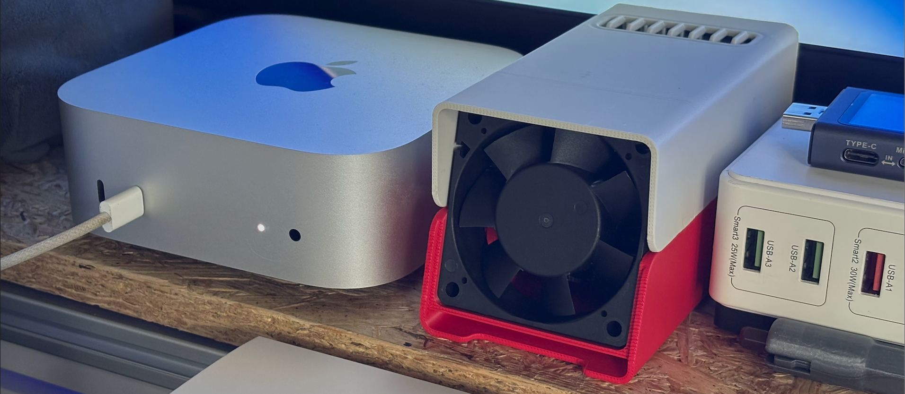
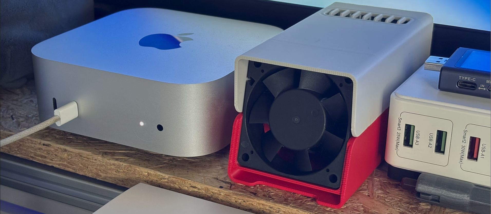
If you want to print a new shell yourself, you can download the model files from makerworld and print it yourself. The link is
https://makerworld.com.cn/zh/models/1311487
If you want to install three Cluster in a 10-inch rack, you can use the following model.
https://makerworld.com.cn/zh/models/1349837
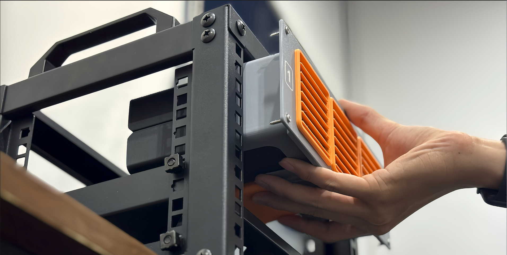
LM3H Installation
First, attach the heatsink to the main control chip to improve heat dissipation. When installing the core board, ensure the correct orientation to avoid damaging the device.

Align the notch on the gold fingers of the core board with the slot on the mainboard. Gently place it in position and press down evenly until you hear a "click" sound, confirming that the core board is securely inserted without tilting or loosening.

To remove the core board, hold both sides of the board evenly with both hands and gently pull upward. Avoid applying excessive force to one side, as this may cause damage. If the core board is tightly fitted, slightly wiggle it left and right before pulling it out. Do not pull it out forcefully to prevent damage to the gold fingers or the mainboard slot.
CM4 and CM5 Installation
- First, install the CM4 / CM5 module onto the adapter board
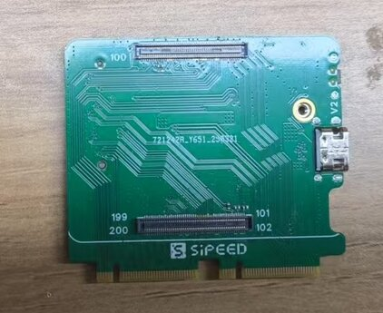
- Then insert the adapter board into the mainboard slot
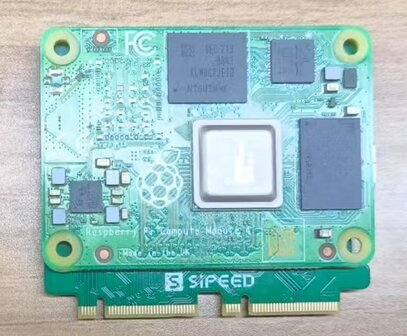
If you are using CM5 and require USB3.0, make sure to leave one slot empty between modules to ensure proper USB 3.0 functionality.
M4N Installation
- First, install the M4N core module onto the adapter board

- Then insert the adapter board into the mainboard slot
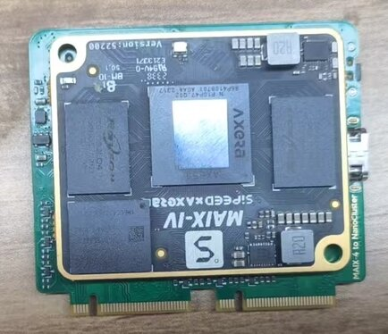
Fan Installation
Align the fan with the reserved mounting holes on the baseboard:
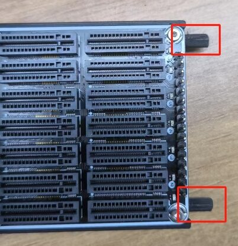
Make sure the fan is facing the correct direction — the airflow should point toward the Ethernet port to better dissipate heat from the SOM:
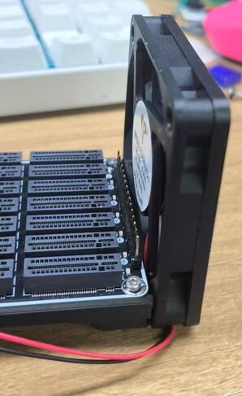
Secure the fan firmly to the baseboard using screws:
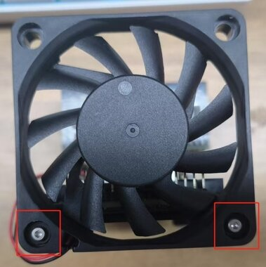
Connect the fan's power cable to the fan power connector on the baseboard.
Please ensure the correct plug orientation — the red wire should be connected to the positive terminal:

Power Supply
NanoCluster supports both USB-C PD and PoE power input, with dual hot-plug capability — you can connect both PD and PoE at the same time, and the system will remain stable even if one source is disconnected. Either power source can be plugged or unplugged at any time.
By default, the system supports 60W (20V/3A) PD input, and up to 65W (20V/3.25A) when using e-Marker USB-C cables. We recommend using the included PD adapter and high-quality USB-C cables to ensure stable power delivery. An optional 60W peak / 50W sustained PoE module is available for deployments where dedicated power access is limited.
Max Supported Configurations (Based on Power Budget):
| Power Source | Max Supported SOMs |
|---|---|
| PD | 7× LM3H / CM4 / CM5 / M4N |
| PoE | 7× LM3H / CM4; 6× CM5 / M4N |
| SSD Installed | Up to 4× SOMs with SSDs (space-limited) |
Note: CM5 and M4N modules have higher power consumption. When using PoE, it is recommended to connect no more than 6 of these.
PD Port Description
The board supports USB-C PD power input, with a maximum of 65W. Please use the official adapter or a third-party adapter rated at 20V/3A or higher to ensure reliable operation under full load.

PoE Module Installation
NanoCluster supports an optional PoE module for power-over-Ethernet deployment, helping simplify wiring. Please follow the diagrams below for proper installation:

Align the PoE module with the mainboard socket and insert carefully. Ensure a firm and secure connection.
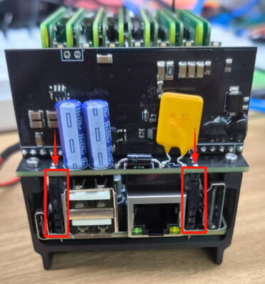
Use a PoE switch or adapter compliant with standard protocols to ensure safety and stability.
Flashing the Image
The core board comes with a pre-installed system. If you need to reflash the system, follow the steps below:
LM3H Flashing
Download the required firmware image and prepare a computer that supports USB OTG along with a USB cable. The NanoCluster currently uses images compatible with the Longan Pi 3H, which can be downloaded here: Click to Download.
Insert the core board into the Slot1 position, then use a USB cable to connect the mainboard's OTG interface (the lower port) to the computer. Press and hold the BOOT button, then power on or reset the device to enter UMS flashing mode.

Once the firmware image is ready, open balenaEtcher, select the image file to be flashed, and ensure the core board is recognized as a USB drive. In balenaEtcher, choose the target device, click the "Flash" button to start the flashing process, and wait for it to complete. Safely eject the device, disconnect the USB cable, and restart the device to boot into the new system.

CM4/CM5 Flashing
Install the
rpiboottool following the official documentation.Press and hold the BOOT button on the adapter board, then connect the USB OTG port to your host computer.
Once the host detects a BCM2711 (BCM2712) Boot device, run
rpiboot. After a few seconds, a USB drive will automatically appear.Open the Raspberry Pi Imager, select the desired image, and flash it to the detected device.
M4N Flashing
You can refer to the System Flashing Guide for the flashing process.
Remote Management
The mainboard is equipped with an Ethernet port for connecting to a switch. Devices within the cluster are interconnected through the switch and can be controlled and managed via their IP addresses.
How to obtain the device's IP address (using the LM3H module as an example):
First, connect the Ethernet cable to the mainboard's port, then power on the device. The pre-installed firmware has mDNS service enabled. On your PC, enable the Avahi service and use mDNS to scan the entire network to retrieve the mDNS domain name information of the lpi3h device.
avahi-browse -art | grep lpi3h
Then use the following command:
ssh sipeed@lpi3h-xxxx.local
to connect (replace xxxx with the hostname obtained using the avahi-browse command).
lpi3h is the default mDNS hostname prefix for LM3H. If you are using CM4 or CM5, please adjust the hostname according to the system image you have flashed.
Serial Connection
Each SOM exposes the system serial port to a 2.54mm header, which can be connected for debugging using a serial-to-USB module.
If you need to debug or control multiple slots simultaneously, we recommend using the USB to four serial ports expansion board we provide. This expansion board consolidates the serial signals from slot3, slot5, slot6, and slot7 into the USB interface of slot1, making it easier to manage and operate centrally.
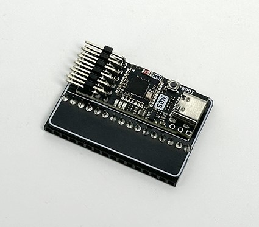
⚠️ Due to the serial port expansion module partially obstructing the airflow and the module itself supporting only 4 serial ports, it is recommended to insert only 4 to 5 SOMs when using this module to ensure system cooling and debugging stability.
Power Control
The reset pins for slots 1~7 are controlled by slot 1 through I2C extended IO, enabling remote power on/off functionality.
Example: Reset Control Using LM3H:
# Reset the switch chip (GPIO 0)
sudo gpioset gpiochip2 0=0 && sudo gpioset gpiochip2 0=1
# Reset slot2 (LM3H)
# Hold for 8 seconds to power off
sudo gpioset gpiochip2 2=0 && sleep 8 && sudo gpioset gpiochip2 2=1
# Quick trigger to power on
sudo gpioset gpiochip2 2=0 && sleep 1 && sudo gpioset gpiochip2 2=1
# Reset slot2 (CM4)
sudo gpioset gpiochip2 2=0 && sleep 1 && sudo gpioset gpiochip2 2=1
# Reset slot2 (CM5)
# Simulate power button press for CM5 using GPIO level changes to power on/off:
# - If the system is Raspberry Pi OS Lite (headless): one short press will shut down.
# - If the system is Raspberry Pi Desktop (with GUI): two short presses are required to shut down.
# Simulate two short presses (shutdown for Desktop systems)
sudo gpioset gpiochip2 2=0 && sleep 1 && sudo gpioset gpiochip2 2=1
sudo gpioset gpiochip2 2=0 && sleep 1 && sudo gpioset gpiochip2 2=1
# Simulate a single short press (power on)
sudo gpioset gpiochip2 2=0 && sleep 1 && sudo gpioset gpiochip2 2=1
Known issue: If you force a hard shutdown of the CM5 by long-pressing the button, the system cannot be started again with a short press. You must power cycle the device to restore normal operation.
gpiochip2refers to the GPIO controller index.x=0sets the IO with indexxto low level, whilex=1sets it to high level.
| GPIO Index | Function |
|---|---|
| 0 | Switch chip reset |
| 1~7 | slot1~slot7 reset |
Example: Reset Control Using CM4/CM5:
To enable I2C and load the PCA9557 driver on CM4 or CM5, you can control it in the same way:
Edit /boot/firmware/config.txt and add the following content:
dtparam=i2c_arm=on
dtoverlay=pca953x,addr=0x18,pca9557
After saving and rebooting, you can control the slot reset using the gpioset method.
- CM4 corresponds to GPIO controller index:
gpiochip2- CM5 corresponds to GPIO controller index:
gpiochip14
The control method is the same as for LM3H, but you only need to replace gpiochip with the actual index corresponding to the platform.
Fan Speed Adjustment
LM3H / CM4 / CM5 all support fan speed control. By default, LM3H automatically adjusts fan speed based on CPU temperature, while the official images of CM4 and CM5 run the fan at full speed. Below are the control methods for each platform.
If you want to manually control the fan, you can connect to the slot1 device via SSH and execute the following commands:
LM3H Fan Control
echo disabled | sudo tee /sys/class/thermal/thermal_zone2/mode
echo 4 | sudo tee /sys/class/thermal/cooling_device0/cur_state
The value of cur_state ranges from 0 to 4, representing different fan speeds.
To restore automatic control, use the following command:
echo enabled | sudo tee /sys/class/thermal/thermal_zone2/mode
CM4 Fan Control
Add the following line to /boot/firmware/config.txt:
dtoverlay=pwm-2chan,pin=12,func=4,pin2=13,func2=4
After rebooting, execute:
sudo pigpiod
Control the fan using Python:
import pigpio
pi = pigpio.pi()
# Set PWM frequency and range
pi.set_PWM_frequency(13, 50)
pi.set_PWM_range(13, 200)
# Set fan speed
pi.set_PWM_dutycycle(13, 0) # Off
pi.set_PWM_dutycycle(13, 200) # Full speed
CM5 Fan Control
Control the fan using Python:
import RPi.GPIO as GPIO
GPIO.setmode(GPIO.BCM)
GPIO.setup(13, GPIO.OUT)
pwm = GPIO.PWM(13, 50) # 50Hz frequency
pwm.start(0) # Off
pwm.start(100) # Full speed
Thermal Management
It is recommended to place the device in a well-ventilated environment with a temperature below 30°C to reduce the overall thermal load.
For optimal performance, maintain the system's continuous operating power below 50W, with peak power not exceeding 60W, to match the power supply capacity and thermal performance.
If no SSD is installed, the system's space and cooling capacity can support up to 7 SOMs running simultaneously. If SSDs are installed, to ensure proper airflow, it is recommended to install SOMs with spacing, supporting up to 4 SOMs.
Slot 7 is located at the edge of the chassis, where fan airflow is lower but there is sufficient space to install a heatsink. It is recommended to install a larger heatsink in this position to enhance cooling efficiency.
FAQ (Troubleshooting)
Device Won't Power On / Can't Boot into System
Ensure you are using a power adapter that supports at least PD 20V output. Avoid using USB power from a host device, as this may prevent the device from starting properly. Check if the green indicator light near the power input interface is lit. If there is no response, the issue may lie with the power adapter or power cable. Observe the blue power indicator lights corresponding to each slot to determine if the system has started normally.
If LM3H fails to boot into the system, press and hold the BOOT button while powering on or resetting the device to check if it enters UMS mode. Confirm whether the device is recognized as a USB drive in disk management. If the system is damaged or cannot boot, you can reflash the firmware image. If UMS mode cannot be entered, try the emergency flashing method.
If CM4/CM5 fails to start normally, you can re-flash the system image following the instructions in the firmware image section and test again.
Network Connection Issues (Unable to Obtain IP)
If the system boots successfully but there are network connection issues or the device cannot obtain an IP address, ensure the Ethernet cable is connected before powering on the device. Switches detect network interfaces when the device powers on. Plugging in the Ethernet cable after powering on may cause the interface to fail to recognize the connection.
Emergency Flashing (LM3H)
If U-Boot is corrupted and the device cannot enter UMS mode, you can manually recover it using FEL mode. Use the sunxi-fel or xfel tools to load U-Boot into memory and start UMS mode, then proceed with flashing.
Entering FEL Mode
Short the specified pin on slot1 to GND, then power on the device to enter FEL mode (future versions may add button control).

Installing the awusb Driver
You need to install the sunxi-awusb driver to recognize the H618 chip.
sudo apt update
sudo apt install dkms
cd sunxi-awusb
sudo cp -r ./ /usr/src/sunxi-awusb-0.5
sudo dkms add -m sunxi-awusb -v 0.5
sudo dkms build -m sunxi-awusb -v 0.5
sudo dkms install -m sunxi-awusb -v 0.5
sudo modprobe awusb
sudo cp udev/50-awusb.rules /etc/udev/rules.d/
sudo udevadm control --reload-rules
Bus 002 Device 005: ID 1f3a:efe8 Allwinner Technology sunxi SoC OTG connector in FEL/flashing mode
Obtaining the U-Boot File
Download the pre-compiled U-Boot file: Click to Download
Using sunxi-fel
Install and compile:
git clone https://github.com/linux-sunxi/sunxi-tools.git
cd sunxi-tools
make tools
sudo make install
Flash U-Boot:
sudo sunxi-fel uboot /path/u-boot-sunxi-with-spl.bin
After completing the process, the device should enter UMS mode successfully, allowing you to proceed with flashing the system image.
Using xfel
Install and compile:
sudo apt install libusb-1.0-0-dev
git clone https://github.com/xboot/xfel.git
cd xfel
make
sudo make install
Flash U-Boot:
xfel ddr lpddr4
xfel write 0x4a000000 /path/u-boot-dtb.bin
xfel exec 0x4a000000
After completing the process, the device should enter UMS mode successfully, allowing you to flash the system image.
CM4 Lite Fails to Boot After Reset
In the first batch of CM4 adapter boards, using a CM4 Lite (without eMMC) and following the Power Control instructions may result in the module failing to boot after a reset. This issue will be fixed in the next hardware revision. If you encounter this problem, it is recommended to use the reboot command to restart the device instead of performing a hardware reset.